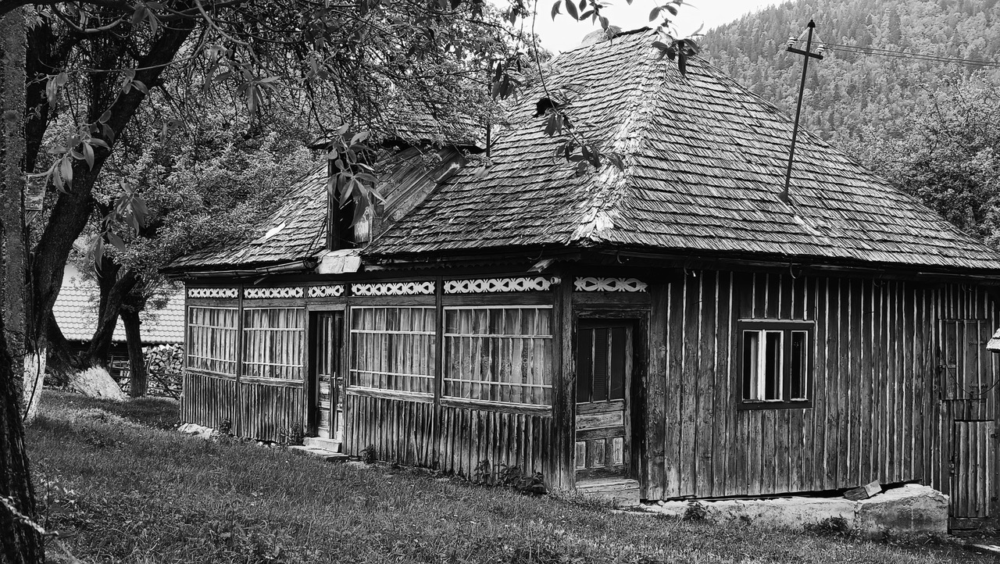

As he lies dying, the protagonist of Muriel Barbery’s Gourmet Rhapsody—a celebrated and despotic food critic—reviews the highlights of his career in search of the common denominator that links all the tastes he has savored. One flavor in particular eludes him to the very end: a taste abandoned by choice, deliberately overlooked, perhaps something rooted in childhood and therefore impossible to grasp directly.
That, to me, is the essence of a Proustian madeleine.
Not the richest dish or the most successful combination of flavors, but something primordial, almost commonplace, that comforts and shields us from our most basic fears and vulnerabilities—darkness, the unknown, loss, cold, hunger, death. Taste means little on its own without the circumstances that accompanied it and that continue to resonate through time like a Pavlovian reflex. For Proust, it was warmth against the cold to which he was particularly sensitive, together with the circle of affection and security of childhood that we are all destined to miss.
When I think back on memorable banquets and meals in celebrated restaurants, I am often unable to recall what I actually ate. A dish means very little to me unless it remains attached to a story. Things become more complicated when something emerges from the darkness of a past that does not seem to be ours and yet, at some point, we must somehow have lived it.
In Romanian cuisine, soups and broths form the foundation of a meal. Ciorba de perisoare—a soup with small meatballs—is one of those dishes whose recipe every family guards jealously, adapting it according to taste or the ingredients of the season. It is nourishing and deeply flavorful, with a pleasant tang derived from ingredients that vary from region to region and may be added at the end of cooking: sour cream, yogurt, or lemon.
I first tasted ciorba at a roadside restaurant somewhere between Bucharest and Brașov. I hesitated before going inside because of the dreadful music blaring at full volume. But I was too nervous to continue the journey without stopping for lunch.
Instead of the familiar Fiat Panda I had reserved, the rental company handed me a large and rather intimidating black Dacia. They had also demanded a disproportionate deposit, citing the fact that Romania’s roads have the highest rate of fatal accidents in Europe. Up to that point I had been driving with my foot hovering over the brake pedal, crawling along dual carriageways interrupted by level and even pedestrian crossings, reluctant to exceed eighty kilometres per hour, stiff with tension.
Before reaching Brașov, the road climbs through the foothills of the Carpathians. A handful of ski resorts preserve a faded longing for Mitteleuropa, with holiday homes crowned by steep roofs, pointed turrets and whimsical wooden embellishments. Beyond them unfolds the vast Transylvanian plateau, thickly covered with forests and pastureland, dotted with farming villages, rural churches, monasteries and fortresses, all under the jurisdiction of the baroque city of Brașov.

The following morning I set out early.
I had no destination in mind. I simply wanted to escape the hilltop castles with their wooden barbicans and fabricated legends, staged for the amusement of summer crowds. I took secondary roads, alert to the possibility of encountering a modest horse-drawn cart around any bend.
Transylvania is a region of extraordinary beauty, one of the largest and most unspoiled reservoirs of biodiversity in Europe. As I drove deeper into the mountains, the landscape assumed the serene aspect common to alpine foothills.
Around noon I entered the name of a secluded inn into the car’s GPS. To reach the place I had to drive uphill nearly ten kilometres on an unpaved road through evergreen forests. A scattering of houses among clover fields and wooded slopes appeared somehow to survive in complete isolation. Yet it seemed a prosperous community, perhaps inhabited mostly by weekend residents, judging by the handsome chalets and gleaming new cars.
The restaurant stood at the top of a steep and rutted incline.
The view alone was restorative.
I was shown to a verandah enclosed by plexiglass panels, where only a handful of diners remained. I ordered the famous ciorba along with a purée of seasonal vegetables to spread on bread with tomatoes and olives.
To drink, I chose Ursus beer, brewed in Cluj-Napoca, the unofficial capital of Transylvania. Its logo features a bear—a reminder that the animal still roams the forests of the region—and its slogan proudly proclaims it The Queen of Beer in Romania.
The taste of the ciorba, traditionally served with a dollop of sour cream and a green pepper, will forever remain entwined with the view across the valley—the mountains on the horizon, the onion-domed bell tower of the village church, and the pear-shaped haystacks at the edge of the fields.
But even more with the chance walk I took after lunch along a path that followed the ridge.
Below the newer houses, half hidden among birch thickets and beneath the sprawling branches of a cherry tree, stood sheds, barns and cottages, derelict as worn-out garments—crooked, patched and weathered, yet somehow spared abandonment. The old houses, clearly no longer inhabited, still served as shelters for tools, livestock, or whatever else remained useful. Their roofs of thatch, reeds, shingles and stone slabs sagged like threadbare jackets.
Wooden houses possess a grace in their decay that masonry buildings rarely achieve.

Every detail—the carved lintels, the weather-bleached planks, the repairs fashioned from mismatched boards and sheets of metal, the fish-scale shingles meticulously laid by hand, and in some cases the shrivelled curtains at the windows—held me there, telling stories that resonated in a strangely familiar way.

Through those austere winters, gathered around a single stove and eating the evening ciorba, I came to know the entire family: the youngest child, the mother, the father, the grandmother, the grandfather, taking turns on Saturday night to wash in the same hot bath with the same bar of soap; the wilted celandine on the windowsill, the dolls fashioned from cornhusks, the floors scrubbed with ashes.
In that silence I understood that the ciorba had not been merely a flavour but an architecture of comfort: the steaming broth bright with vegetables like a Byzantine mosaic, the golden eyes of fat glistening on the surface, the drifting parsley leaves, and the meatballs of beef, egg, rice and spices floating like an apparition of absolute substance.
It was that entire composition that returned to me.
As though, for a moment, it had restored access to a past that had never been mine and that I nevertheless recognized as familiar.